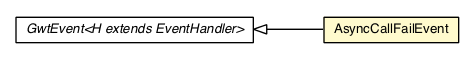

com.gwtplatform.mvp.client.proxy
Class AsyncCallFailEvent

java.lang.Object
 com.google.web.bindery.event.shared.Event<H>
com.google.gwt.event.shared.GwtEvent<AsyncCallFailHandler>
com.gwtplatform.mvp.client.proxy.AsyncCallFailEvent
com.google.web.bindery.event.shared.Event<H>
com.google.gwt.event.shared.GwtEvent<AsyncCallFailHandler>
com.gwtplatform.mvp.client.proxy.AsyncCallFailEvent
public class AsyncCallFailEvent
- extends GwtEvent<AsyncCallFailHandler>
Event fired after any asynchronous call to the server performed by GWTP MVP returns with
Such asynchronous calls only occur when using code splitting.
- Author:
- Philippe Beaudoin
- See Also:
AsyncCallFailHandler,
AsyncCallStartEvent,
AsyncCallSucceedEvent
fire
public static void fire(EventBus source,
Throwable caught)
- Fires a
AsyncCallFailEvent
into a source that has access to an EventBus.
- Parameters:
source - The source that fires this event (EventBus).caught - failure encountered while executing a remote procedure call.
fire
@Deprecated
public static void fire(HasHandlers source,
Throwable caught)
- Deprecated. Use
fire(EventBus, Throwable) instead.
- Fires a
AsyncCallFailEvent
into a source that has access to an EventBus.
- Parameters:
source - The source that fires this event (HasHandlers).caught - failure encountered while executing a remote procedure call.
getType
public static GwtEvent.Type<AsyncCallFailHandler> getType()
getAssociatedType
public GwtEvent.Type<AsyncCallFailHandler> getAssociatedType()
- Overrides:
getAssociatedType in class GwtEvent<AsyncCallFailHandler>
dispatch
protected void dispatch(AsyncCallFailHandler handler)
- Specified by:
dispatch in class GwtEvent<AsyncCallFailHandler>
getCaught
public Throwable getCaught()
- Access the
Throwable that was obtained when this asynchronous call failed.
- Returns:
- The
PlaceRequest or null if no place request is
known.
Copyright © 2010-2013 ArcBees. All Rights Reserved.